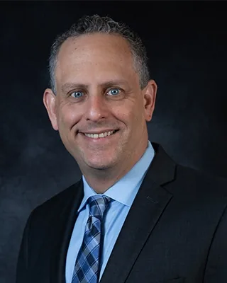

Robert D. Schwartz, Esq., CPA
Attorney at Law
(866) 348-7878 robert@schwartzpa.com
Mr. Schwartz is both an Attorney and a Certified Public Accountant. He practices in the areas of estate planning and administration. By combining his legal and financial knowledge, Mr. Schwartz is able to provide a high quality of service to his clients, and is well suited in matching his clients’ overall goals and objectives with the appropriate planning techniques.
Since establishing his firm in 1996, Mr. Schwartz has prepared over ten thousand Revocable Trusts for his clients. Mr. Schwartz also has experience with some of the more complicated estate planning techniques, such as setting up Irrevocable Life Insurance Trusts, Generations Skipping Tax Planning and Family Limited Partnerships.
Finally, Mr. Schwartz has been instrumental in guiding his clients through the tasks associated with estate and trust administration after the death of a loved one. His many years of experience allow him to serve as both an advisor and a partner during difficult times. A native of Florida, Mr. Schwartz lives in Palm Beach County and has three children.
- Attorney at Law
- Certified Public Accountant
- Graduated with Honors from University of Florida Levin College of Law
- Graduated cum laude from Florida State University
- Member of the Taxation, Real Property, and Probate section of the Florida Bar
- Member of the Elder Law section of the Florida Bar
- National Speaker on Estate Planning